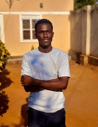

Wamala Bright
About Me
My name is Wamala Bright and I am from Uganda. I enjoy learning web development and building useful websites. I love technology and environmental research.
Kampala, Uganda

Uganda is located in East Africa and is known as the Pearl of Africa. It has rich biodiversity, lakes, and wildlife, and is home to mountain gorillas.